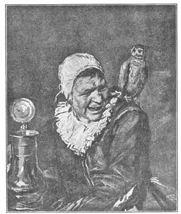
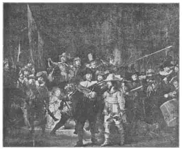

17
TWO DUTCHMEN
两个荷兰人

NEXT door to Flanders on the shore of the North Sea is the country called the Netherlands—the country of wooden shoes and windmills, of tulips and hyacinths, of the Zuider Zee, of canals and dikes. Often people speak of the Netherlands as Holland, but that is not quite correct because Holland is just a part of the country. The people of the Netherlands we generally call Dutch.
The Dutch, like the Italians and the Flemish, had a Renaissance too. The Dutch Born Again time was later in coming than the Italian and the Flemish, but when it did come it produced some of the very best artists of the world.
The Dutch artists painted pictures that were different from those of the Italians and the Flemish. The Dutch religion had become a Protestant religion instead of Roman Catholic, and the Dutch did not believe in decorating their churches as much as the Catholics did. And so the Dutch artists painted very few religious pictures, few Madonnas and Holy Families. Instead they painted portraits and landscapes and pictures of the everyday people and things they saw around them.
Their pictures differed in other ways too. In the older paintings, in Italy and Flanders, for instance, most of the people in the pictures had the natural expression on their faces that they usually wore. You can think of one of these artists saying to some one who was having his portrait painted, “Now just sit still and don’t move, and I’ll paint your portrait.” But some of the Dutch artists had a different idea of portrait painting. A Dutchman named Frans Hals painted portraits of people who you know were not told to sit still and look natural. The expression on the faces of Frans Hals’s portraits is what we call a fleeting expression. He caught a smile, or a grin, or a scowl—expressions that last only a second or two—and he made his pictures look as though in another second the expression would change.
Some pictures by Frans Hals were different in still another way. They showed the strokes of the paint brush not smoothed out, but left in the paint, as if the artist wanted you to see that he had painted the portrait quickly and caught the fleeting expression on the face with a few quick strokes of his brush. Not all his pictures are like this. Some are just as smoothly and carefully finished as can be. A portrait called “The Laughing Cavalier” is one of his most famous pictures and it shows the lace on the man’s cuffs done very carefully—and lace is not an easy material to paint in a picture. “The Laughing Cavalier” really isn’t laughing. He seems to have a self-satisfied smile, instead of a laugh, on his lips.
Another picture by Hals will show you the quick brush-stroke work that he could do so well. It is called “Hille Bobbe” and shows a woman and her parrot. The parrot looks a good deal like an owl and the old woman isn’t a bit pleasant-looking. Sometimes the picture is even called “The Witch of Haarlem.” Haarlem was the Dutch city where Hals lived.
Now, at the time Frans Hals lived and painted, the Netherlands had recently become a free and independent country. To make sure that they would be strong enough to keep this freedom from other countries the Dutch had bands of citizens who were trained to act as companies of soldiers in case of need. Gunpowder and guns were still so new that some of these companies still called themselves archers or crossbowmen. The officers of each company generally had their portraits painted all in one picture and Hals painted several group portraits of the archers and other companies. He is generally spoken of as the greatest of all Dutch portrait painters except Rembrandt.

No.17-1 HILLEBOBBE（《希勒·巴贝》） HALS （哈尔斯 作）
Courtesy of The University Prints
This master, Rembrandt, did most of his work in the city of Amsterdam. He did not do portraits only. He painted almost every kind of’ subject an artist could paint. Rembrandt created a light in his pictures that was unlike real daylight or lamplight but which makes his pictures marvels of brilliant light and deepest shadow. For years he worked hard, lived happily, and earned money and fame. But he spent so much money in collecting beautiful things he liked that he finally owed more than he could pay. His pictures became unpopular, too, and so he found it hard to make money in his old age.
You wouldn’t think, would you, that a picture that is now considered one of the great pictures of the world would be laughed at and disliked, and would make the painter unpopular when it was painted? But that is what happened when Rembrandt painted his“Night Watch.” “The Night Watch” was ordered by one of the companies of men who acted as guards for the city in time of danger. It was to hang in their club house and each member of the guard was to pay his share for having the picture painted.
Rembrandt wanted to show the stir and excitement as the guards marched out, and he painted the picture with the captain and his lieutenant in the front and the members of the guard hurrying out behind them with guns and spears. Children are there to watch the show, and even a dog appears in the picture. The light is very bright on some of the figures and the rest are in the darkness of night. And yet the light is so different from ordinary light that some think the picture is a daytime scene and should not be called “The Night Watch.”

No.17-2 THE NIGHT WATCH（《夜巡》） REMBRANDT（伦勃朗 作）
Courtesy of The Universtiy Prints
Now, when the members of the guard saw the picture, they did not like it.
“We paid to have our portraits painted,” they said “and here the artist has stuck us in the background where it is so dark we can hardly even be recognized.”
Other Dutchmen laughed at the picture. “We can’t tell whether it represents night or day,” they said. And from that time on Rembrandt sold fewer and fewer pictures.
Wouldn’t you like me to show you a list starting with the very best artist in the whole world and then giving the second best and then the third, and so on down to the twentieth or fiftieth or hundredth best artist? Well, I’m not going to show you any such list, not because I don’t want to, but because no one in the world can make such a list. If I did, it would be only my private opinion. It wouldn’t be the best artist and the next best and so on, but the artist I think is best and the one I think is next best. And just because i think he’s best doesn’t mean he is best. No one artist is so much greater than all other artists that every one can say, “He is undoubtedly the best.”
But if all the men who know most about such things made their own private lists of the best, I’m pretty sure all the lists would have Rembrandt somewhere near the top.
So remember how great an artist people think Rembrandt was and if you ever in your whole life get a chance to see one of his real pictures—not just a copy in a book—be sure to look at it long and thoughtfully. Then see where he would come on your list of great artists.
【中文阅读】
在北海海岸，佛兰德斯的近邻是一个叫“荷兰”的国家。这个国家因木屐、风车、郁金香、风信子、须得海、运河和堤坝而闻名于世。人们经常把尼德兰说成是荷兰，其实这并不是很正确，因为荷兰仅仅只是这个国家的一个部分。我们通常把尼德兰人叫做荷兰人。
荷兰和意大利、佛兰德斯一样，也有过一个文艺复兴时期。荷兰的文艺复兴来得比意大利和佛兰德斯晚，但它的到来的确给荷兰产生了一批世界级的优秀画家。
荷兰画家的绘画与意大利、佛兰德斯画家的绘画有区别。荷兰人信仰的是新教而不是罗马天主教，而且荷兰人不像天主教徒那样注重教堂装饰。所以荷兰画家很少画宗教画，很少画圣母像或神圣家族。相反，他们画肖像画、风景画以及他们身边所见所闻的常人琐事。
他们的绘画在其他方面也很独特。例如，在意大利和佛兰德斯的传统绘画中，大多数人物的面部表情都很自然，就像他们通常的表情一样。看到这些画，你可以想象，某位画家正对找他画像的人说：“好，坐下别动，我来给你画像了。”但是，有些荷兰画家对肖像画却持不同的见解。一个叫弗兰斯·哈尔斯的荷兰画家，他在画肖像画时，不会叫人只管摆出自然的表情而坐着一动不动。我们称弗兰斯·哈尔斯画中人 物的面部表情为“转瞬即逝的表情”。他捕捉那些只停留一到两秒钟的表情——一个微笑、露齿笑，或眉头一皱。他使画中人物的表情仿佛下一秒就会发生变化一样。
弗兰斯·哈尔斯的一些画还有其他独特之处。在这些画中，画笔留下的痕迹并没有清理掉，而是留在画面上，看起来就像画家故意把它们留下，好让你知道这画是快速画出的，几个快速笔触就捕捉了人物转瞬即逝的表情。但并不是他的所有绘画都这样。有些画却画得干净而细致。弗兰斯有一幅著名的肖像画叫《微笑骑士》，画中骑士袖口的花边画得很细致。花边在画中并不是那么容易处理的。其实，《微笑骑士》中的骑士并非真的在开怀大笑，好像是嘴角带着一种自我满足的微笑。
哈尔斯的另外一幅画会向你展示他很擅长的快笔素描。这幅画叫《希勒·巴贝》，画的是女人和她的鹦鹉。这只鹦鹉看起来很像一只猫头鹰，老妇人似乎也一点都不友善。有时候，这幅画甚至被称为《哈勒姆的女巫》。哈勒姆是哈尔斯生活的一个荷兰城市。
在弗兰斯·哈尔斯生活和绘画的那个时代，荷兰刚刚成为一个自由独立的国家。为了确保足够的强大来捍卫自由，抵御外侵，荷兰人训练了一支支由公民组成的士兵连，以备战时之需。那时候，火药和枪刚刚发明，非常罕见，所以有些士兵连的成员仍然自称为“射箭手”或“弓箭手”。通常情况下，每个士兵连的长官都要让人替他们画一张集体画像，而哈尔斯就给射箭手和其他士兵连画一些集体画。一般来说，他被认为是，除伦勃朗外，荷兰最伟大的肖像画家。
大师伦勃朗的大部分作品都是在阿姆斯特丹完成的。他不只是画肖像画，而是几乎涵盖所有题材。伦勃朗在绘画中创造了一种特殊的光，这种光不像真正的日光或灯光，但却使他的画成为同时拥有明亮光线和深暗阴影的极品佳作。有好多年，他都在辛勤工作，快乐生活，且名利双收。但是，他大把地花钱收集他喜欢的漂亮东西，以至于最后他赚的钱不够支付。他的画也慢慢变得不受欢迎了。他终于在年老时，发现挣钱很难了。
你可曾想过，现在我们认为是世界上最好的绘画作品，过去却常常遭人嘲笑，没人喜欢，而且还连累画家都不受欢迎。伦勃朗所画的《夜巡》就碰到了这样的情况。《夜巡》是阿姆斯特丹警卫队某个队员请伦勃朗画的。警卫队担负城市的防卫任务。这幅画是要挂在他们俱乐部里，所以警卫队的每个成员都得分担这幅画的费用。
伦勃朗想要展示警卫队出巡时引起的骚动与混乱，所以他把队长和中尉画在前面，警卫队的其他队员拿着手枪和长矛匆匆忙忙跟在后面。画中有许多孩子围过来看热闹，画面上甚至还出现了一只狗。有些人物身上的光线十分明亮，而其他剩下的人却笼罩在黑暗的夜色之中。不过，这种光线与普通光线不同，以至于一些人认为这幅画画的明明是白天的场景，所以根本不应该叫做《夜巡》。
当这些警卫队队员看到这幅画时，他们很不喜欢。
“我们花钱请他为我们画像，”他们说，“但这个画家把我们放在黑暗的背景里，人几乎都认不出来。”
其他荷兰人也嘲笑这幅画。“我们不知道画的到底是晚上还是白天。”他们说。因 此，从那以后，伦勃朗的画卖得越来越少了。
要我列一个世界一流画家的排名表吗？从第一名，到第二名，接着第三名，一直到第二十名、第五十名，或者第一百名。我不会展示什么排名表，不是因为我不愿意，而是世界上没人能列这样的一个排名表。如果我真的列出个什么排名表来，那也只是我个人的意见。那样不一定能选出最好的画家，或仅次于最好的画家等等。那只是我认为最好的，或仅次于最好的。我认为是最好的画家并不一定真的是最好的。没有一个画家能比其他所有的画家都优秀很多，能让每个人都说，“他绝对是最棒的。”
不过，如果硬是要所有对绘画有所了解的人，都按自己的想法各自列个画家排名表，我相当确信，伦勃朗在所有人的排名表中肯定都会是位居前列的。
所以，一定要记住这位伟大的画家——伦勃朗，在人们心目中的地位。如果在你这一生中，能够有机会亲眼见到一幅他的真迹，而不仅仅是书上的复制图，一定要久久地、全神贯注地欣赏。然后，想一想，要是你来列个伟大画家的排名表，你会把伦勃朗排在哪儿？